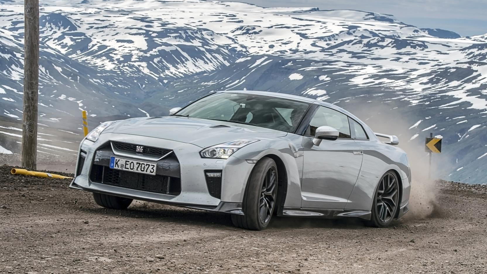
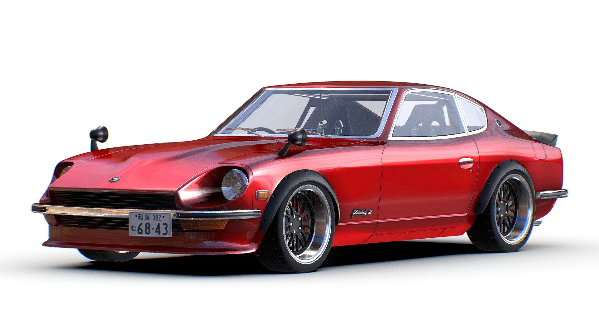
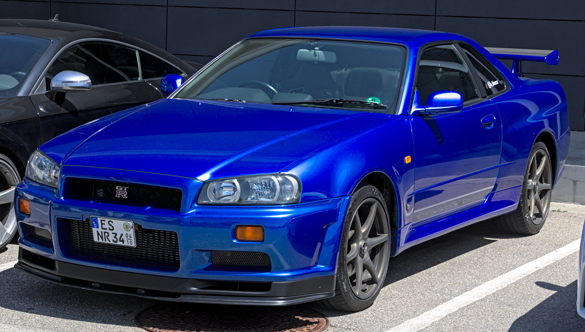
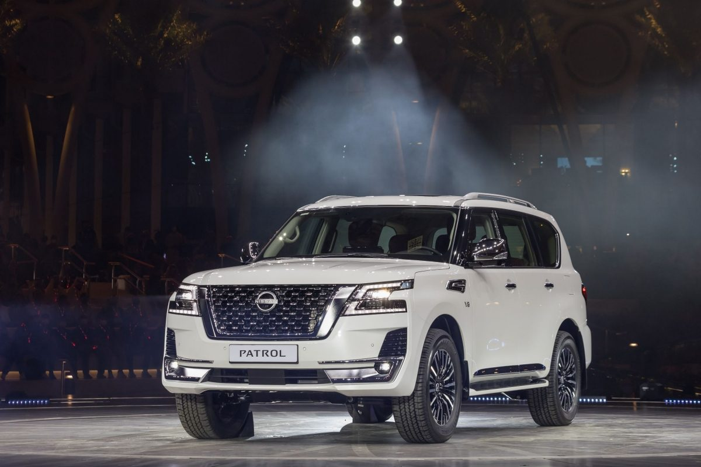
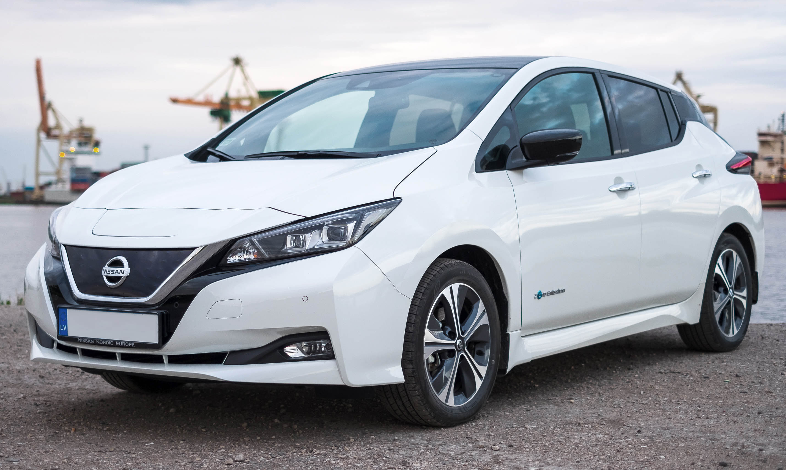
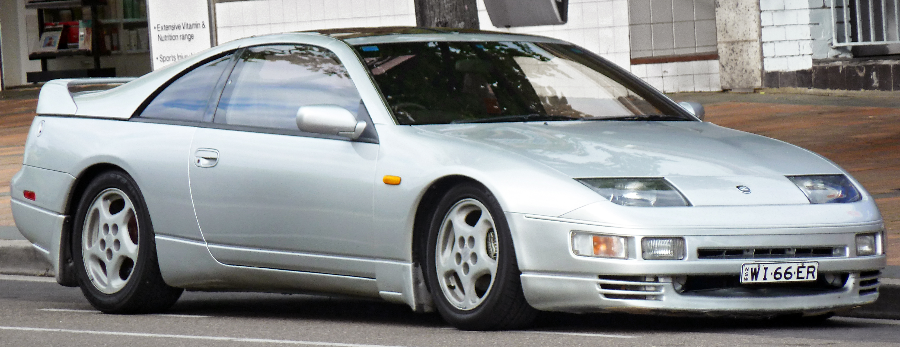
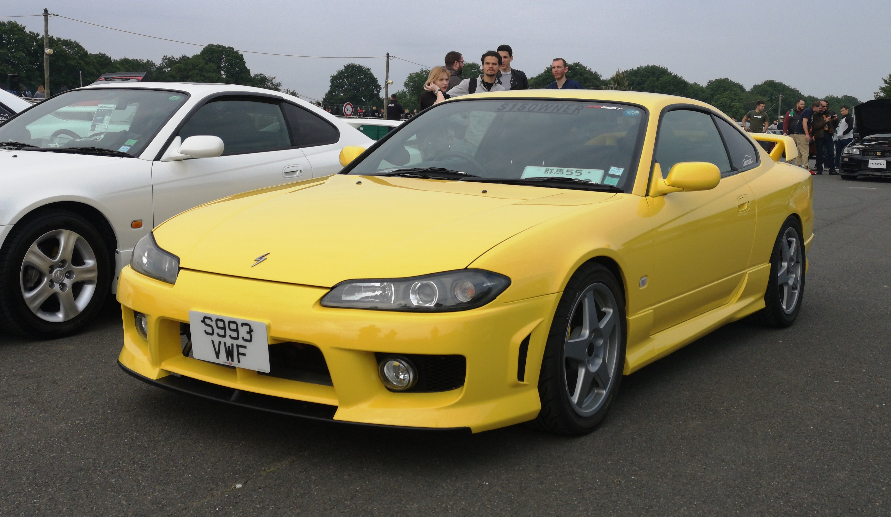
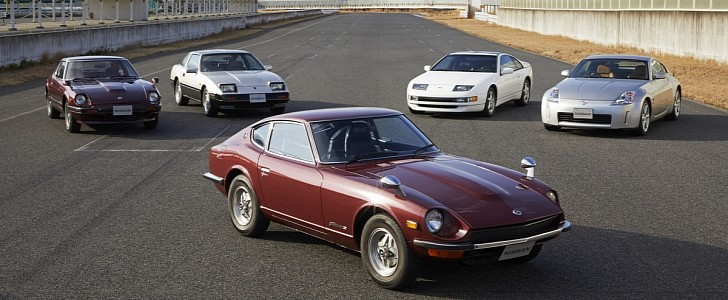
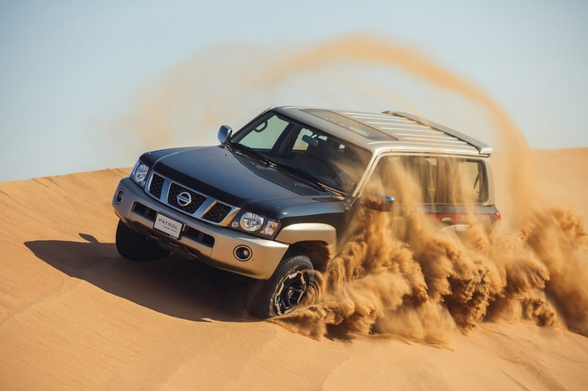
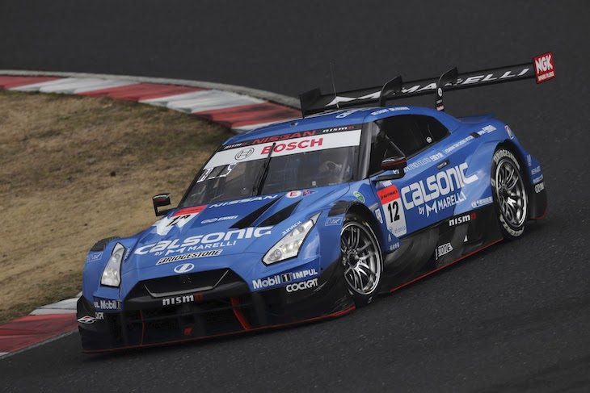

Nissan
Innovation that Excites
Founded: 1933
Country: Japan
Icon: GT-R
EV Pioneer (Leaf)
Innovation that Excites
Nissan's story begins in 1911 with the Kwaishinsha Motor Car Works, founded by Masujiro Hashimoto. In 1914, the company produced its first car, the DAT, named after the initials of the company's three investors. A later model was called the "Datson" (son of DAT), which evolved into "Datsun."
The modern Nissan Motor Co., Ltd. was established in 1933 as a merger of Tobata Casting and DAT Motors. The name "Nissan" was an abbreviation of "Nippon Sangyo" (Japan Industries), the holding company that controlled the new entity.
Before World War II, Nissan produced cars and trucks, largely based on American designs. After the war, the company focused on small, affordable cars for Japan's recovering economy. The Datsun brand became well-known for these economical vehicles.
The 1960s were transformative. Nissan merged with Prince Motor Company, gaining the Skyline and Gloria models. The first-generation Fairlady (known as Datsun Sports in export) appeared, beginning a sports car legacy. The company began exporting aggressively to the United States, where Datsun became a household name.
The 1969 introduction of the Skyline GT-R (KPGC10) created a legend. With its 2.0L DOHC engine and advanced engineering, it dominated Japanese touring car racing, earning the nickname "Hakosuka" and establishing Nissan's performance credibility.
Through the 1970s and 1980s, Nissan grew into a global powerhouse. The 240Z (Fairlady Z) became a sensation in America, offering European sports car styling and performance at Japanese reliability prices. The company built factories worldwide and introduced luxury brand Infiniti in 1989 to challenge Lexus and Acura.
The 1990s brought financial difficulties, leading to an alliance with Renault in 1999. Carlos Ghosn's dramatic turnaround - closing factories, cutting costs, and revitalizing the product line - became a business school case study. The 2007 GT-R (R35) relaunched the brand as a performance leader.
Nissan has also been an electric vehicle pioneer. The 2010 Leaf became the world's first mass-market electric vehicle, with over 500,000 sold. Today, Nissan continues to innovate with electric technology, ProPILOT driver assistance, and a renewed commitment to performance.
"If you think, you can. If you believe, you achieve."- Nissan corporate philosophy

R35: 2007-present
Known as "Godzilla," the GT-R is Nissan's ultimate performance statement. The R35 GT-R shocked the world in 2007 with its 480 hp, advanced ATTESA E-TS all-wheel drive, and supercar-slaying performance at a fraction of the price.

1969-1978
The car that put Nissan on the map in America. Beautiful design, reliable mechanics, and genuine sports car performance at an affordable price. A landmark in automotive history.

1957-present
A legendary nameplate, especially the R32, R33, and R34 GT-R models. The R34, with its 2.6L twin-turbo RB26DETT and advanced electronics, became a global icon through video games and movies.

1951-present
Toyota Land Cruiser's eternal rival. A rugged, capable off-roader that dominates in the Middle East, Australia, and other tough environments. The current Y62 model adds luxury to capability.

2010-present
The world's first mass-market electric vehicle. Over 500,000 sold globally, proving that EVs could be practical and popular.

1989-2000
A technological tour-de-force with twin-turbo V6, four-wheel steering, and stunning 1990s design. A future classic.

1965-2002
The drift king. Lightweight, rear-wheel drive, and perfect balance made the Silvia a tuner favorite and drift legend.
The GT-R nameplate carries immense weight in automotive culture. It represents Nissan's relentless pursuit of performance and technological innovation.
The first GT-R, based on the Skyline sedan. Its 2.0L DOHC engine and advanced suspension dominated Japanese touring car racing, winning 33 races in 2 years.
The second generation, with larger 2.6L engine. Oil crisis cut its life short - only 197 produced, making it extremely rare.
The rebirth. ATTESA E-TS all-wheel drive, Super-HICAS steering, and RB26DETT engine created a monster. Won 29 consecutive races in Japanese touring cars.
Larger, heavier, but more refined. Set a Nürburgring lap record in 1996.
The icon. Advanced multi-function display, aggressive styling, and tuning potential made it legendary through "2 Fast 2 Furious" and Gran Turismo.
Godzilla returns. No longer Skyline-based, it's a standalone supercar that embarrassed far more expensive exotics. Continuously improved for 15+ years.

"The GT-R is a car that treats you like a driver, not a passenger."- Kazunori Yamauchi, Gran Turismo creator
The Z car has been Nissan's heart and soul - an affordable, beautiful, and engaging sports car that has spanned generations.

The Nissan Patrol has been conquering the world's toughest terrain since 1951. From the Australian outback to Middle Eastern deserts, the Patrol is synonymous with durability and capability.
The Patrol is especially revered in the Middle East, where it's the vehicle of choice for desert driving and a cultural icon. The Y61, with its solid axles and legendary durability, remains in production for markets where toughness matters more than refinement.

The GT-R's racing dominance in the early 1990s - particularly its 29 consecutive wins in Japanese touring cars - led to rule changes specifically designed to stop it. That's the ultimate racing compliment.
